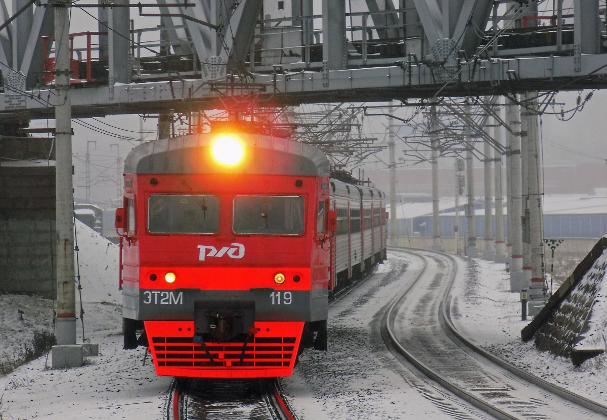
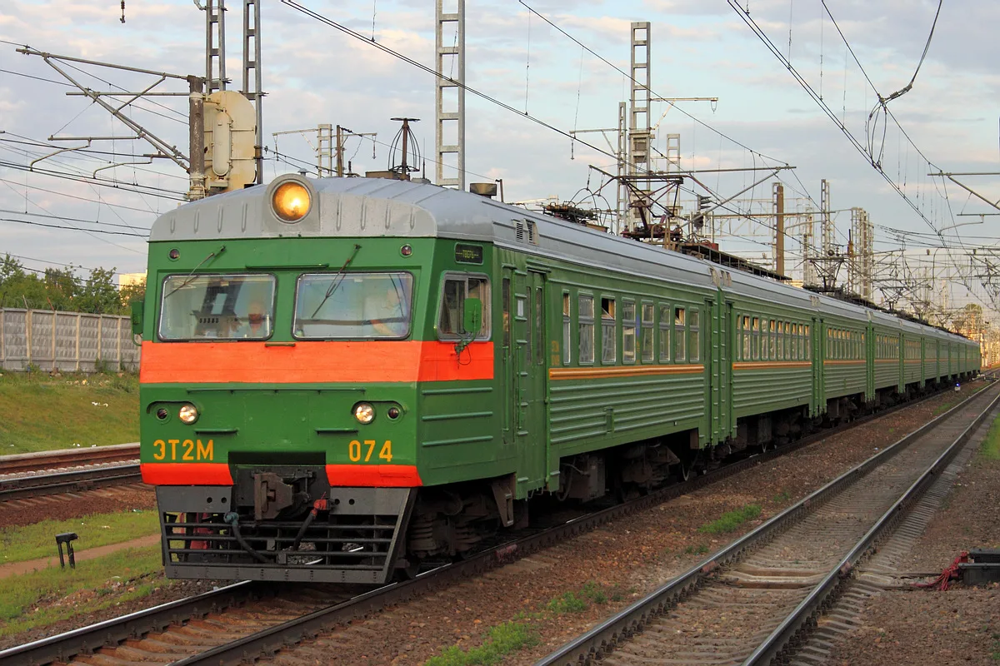
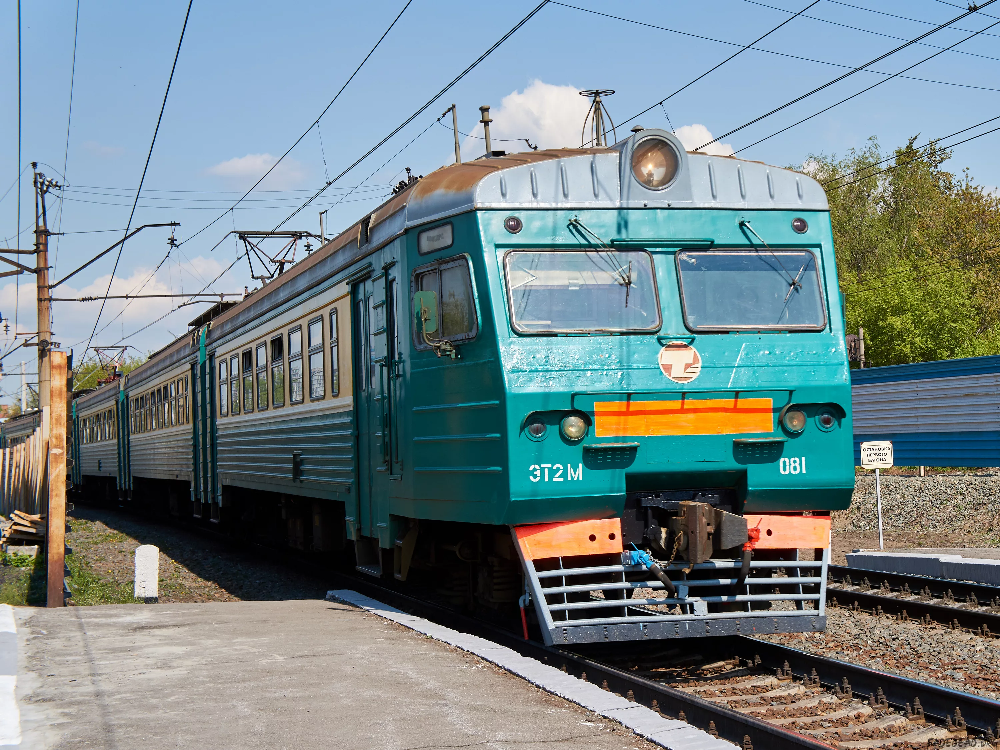

Электропоезд постоянного тока, выпускавшийся с февраля 1957 года по июнь 1962 года на Рижском вагоностроительном заводе (РВЗ) для железных дорог СССР. Заводское обозначение — 62-11. Является первой моделью из электропоездов нового семейства (ЭР).

Серия электропоездов постоянного тока, выпускавшихся с июня 1962 года по август - сентябрь 1984 года Рижским вагоностроительным заводом, который строил их совместно с Рижским электромашиностроительным и Калининским вагоностроительным заводами.
Российский пассажирский шестиосный электровоз постоянного тока, выпускаемый Коломенским заводом. Первый серийный пассажирский электровоз постоянного тока в истории российского электровозостроения. Электрическую часть для ЭП2К выпускает Новочеркасский электровозостроительный завод и Калужский научно-производственный электро-механический завод.

Пригородный электропоезд постоянного тока с рекуперативно-реостатным торможением производства Рижского вагоностроительного завода, являющийся дальнейшим развитием электропоезда ЭР2Р.

Советский пригородный электропоезд постоянного тока, созданный на Рижском вагоностроительном заводе. Построен на базе механической части электропоезда ЭР2 с применением электрооборудования от электропоезда ЭР22В. Заводское обозначение — 62-259.

(Электропоезд Торжокский, 2-й тип) — серия электропоездов постоянного тока, строившихся с 1993 по 2010 год на Торжокском вагоностроительном заводе. Коммерческое название — «Былина».

Серия электропоездов постоянного тока, строившихся с 1999 по 2010 год на Торжокском вагоностроительном заводе. Общее заводское обозначение можно записать как 62-4160, где вместо указываются буквы, добавленные к обозначению ЭТ2 для определённой модификации; например, модель 62-4160ЭМ

Электропоезд ЭТ2Л в апреле 1999 г. поезд введен в эксплуатацию на маршруте Санкт-Петербург — Выборг Октябрьской ж.д. Электропоезд постоянного тока ЭТ2МЛ-063. Фото: Олег Назаров, 2004 г. После 1999 года электропоезда постоянного тока Торжокского завода стали комплектоваться электрооборудованием производства НЭВЗ.
Появилась у нас еще именная электричка, из семейства поездов, что сделаны в Торжке - ЭТ2МЛ "Лужский рубеж" . Ходит она из Петербурга в сторону Лужского района, к станциям Луга или Мшинская
Именные электрички бывали и в советское время. Торжокские поезда подхватили эту традицию. В наших краях именными бывают только они, демиховских электричек с именем я не встречал. В последнее время стало много именных и на Лужском направлении, причем там они посвящены героям Великой Отечественной войны.

Жёлтый окрас: